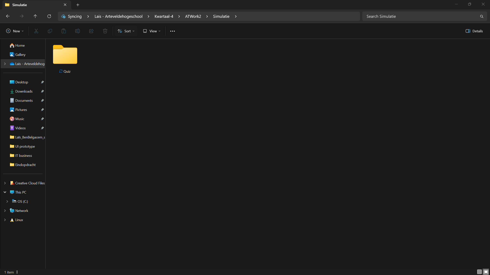
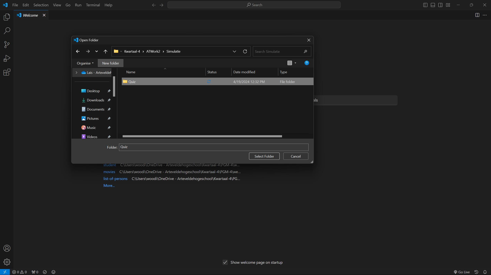
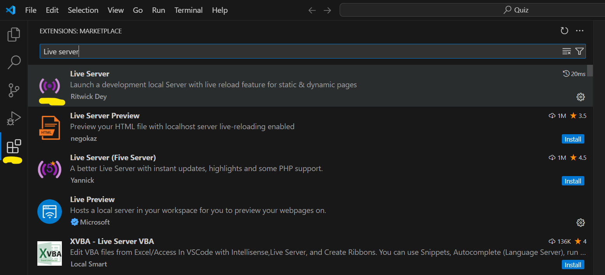

STAP 1 - MAPPEN EN BESTANDEN
Eerst hebben we een code editor nodig. Voor deze workshop gebruiken we Visual Studio Code
- 1.1 Maak een nieuwe map aan en geef het als naam quiz. 
- 1.2 Open het programma Visual Studio Code en open de folder die je zonet hebt aangemaakt. 
- 1.3 Bouw onderstaande mappen- en bestandenstructuur na.
- 1.4 Download het audio bestand en plaats deze in de media folder.
- 1.5 Installeer bij extensions de extensie 'live server'. 
- 1.6 Start de live server door rechtsonder op de Go live knop te klikken. Jouw standaard browser zal nu gestart worden en je zal een blanco webpagina zien!
- VEEL CODE PLEZIER!